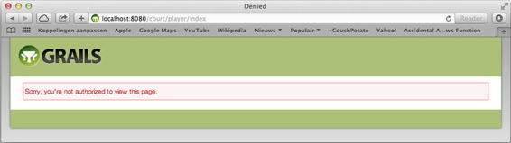

Grails
When you embark on the creation of a Java web application, you need to put together a series of Java classes, create configuration files, and establish a particular layout, all of which have little to do with the problems an application solves. Such pieces are often called “scaffolding code” or “scaffolding steps,” since they are just the means to an end—the end being what an application actually accomplishes.
Grails is a framework designed to limit the amount of scaffolding steps you need to take in Java applications. Based on the Groovy language, which is a Java Virtual Machine–compatible language, Grails automates many steps that need to be undertaken in a Java application on the basis of conventions.
For example, when you create application controllers, they are eventually accompanied by a series of views (e.g., JavaServer Pages [JSP] pages), in addition to requiring some type of configuration file to make them work. If you generate a controller using Grails, Grails automates numerous steps using conventions (e.g., creating views and configuration files). You can later modify whatever Grails generates to more specific scenarios, but Grails undoubtedly shortens your development time since you won’t need to write everything from scratch (e.g., write XML configuration files and prepare a project directory structure).
Grails is fully integrated with Spring 4.0, so you can use it to kick-start your Spring applications and thus reduce your development efforts.
18-1. Getting and Installing Grails
Problem
You want to start creating a Grails application but don’t know where to get Grails and how to set it up.
Solution
You can download Grails at http://www.grails.org/. Ensure that you download Grails version 2.4 or higher, since only those versions support Spring 4.0. Grails is a self-contained framework that comes with various scripts to automate the creation of Java applications. In this sense, you simply need to unpack the distribution and perform a few installation steps in order to create Java applications on your workstation.
After you unpack Grails on your workstation, define two environment variables on your operating system: GRAILS_HOME and PATH. This allows you to invoke Grails operations from anywhere on your workstation.
If you use a Linux workstation, you can edit the global bashrc file– located under the /etc/ directory, or a use’s .bashrc file, located under a user’s home directory. Note that, depending on the Linux distribution, these last file names can vary (e.g., bash.bashrc). Both files use identical syntax to define environment variables, with one file used to define variables for all users and another for a single user. Place the following contents in either one:
GRAILS_HOME=/<installation_directory>/grails
export GRAILS_HOME
export PATH=$PATH:$GRAILS_HOME/bin
If you use a Windows workstation, go to the Control Panel, and click the System icon. On the window that emerges, click the Advanced Options tab. Next, click the “Environment variables” box to bring up the environment variable editor. From there, you can add or modify environment variables for either a single user or all users, using the following steps:
 Caution Be sure to add this last value and not modify the PATH environment variable in any other way, as this may cause certain applications to stop working.
Caution Be sure to add this last value and not modify the PATH environment variable in any other way, as this may cause certain applications to stop working.
Once you perform these steps in either a Windows or Linux workstation, you can start creating Grails applications. If you execute the command grails help from any directory on your workstation, you should see Grails’s numerous commands.
18-2. Creating a Grails Application
Problem
You want to create a Grails application.
Solution
To create a Grails application, invoke the following command wherever you wish to create an application: grails create-app <grailsappname>. This creates a Grails application directory, with a project structure in accordance to the framework’s design.
If this last command fails, consult Recipe 18-1, on “Getting and Installing Grails.” The grails command should be available from any console or terminal if Grails was installed correctly.
How It Works
For example, typing grails create-app court creates a Grails application under a directory named court. Inside this directory, you will find a series of files and directories generated by Grails on the basis of conventions. The initial project structure for a Grails application is the following:
application.properties
grails-app/
grailsw
grailsw.bat
lib/
scripts/
src/
test/
web-app/
wrapper/
Note In addition to this last layout, Grails also creates a series of working directories and files (i.e., not intended to be modified directly) for an application. These working directories and files are placed under a user’s home directory under the name .grails/<grails_version>/.
As you can note from this last listing, Grails generates a series of files and directories that are common in most Java applications. Directories like src for placing source code files and a web-app directory that includes the common layout for Java web application(e.g., /WEB-INF/, /META-INF/, css, images, and js).
Right out of the box, Grails saves you time by putting these common Java application constructs together using a single command.
A Grails Application’s File and Directory Structure
Since some of these files and directories are Grails specific, we will describe the purpose behind each one:
Note Grails does not support Apache Maven out of the box. However, if you prefer to use Maven as your build tool, there is support for using Maven with Grails. Consult http://www.grails.org/Maven+Integration.
Grails comes preconfigured to run applications on an Apache Tomcat web container. Note the files pertaining to the Apache Tomcat container are one of those placed under a user’s home directory (i.e., .grails/<grails_version>/), they are not visible. Similar to the creation of creating a Grails application, the process of running Grails applications is highly automated.
Placed under the root directory of a Grails application, invoke grails run-app. This command will trigger the build process for an application if it’s needed, as well as start the Apache Tomcat web container and deploy the application.
Since Grails operates on conventions, an application is deployed under a context named after the project name. So for example, the application named court is deployed to the URL http://localhost:8080/court/. Figure 18-1 illustrates the default main screen for Grails applications.
Figure 18-1. Default main screen for court Grails application
The application is still in its out of the box state. Next, we will illustrate how to create your first Grails construct in order to realize more time-saving procedures.
Creating Your First Grails Application Construct
Now that you have seen how easy it is to create a Grails application, let’s incorporate an application construct in the form of a controller. This will further illustrate how Grails automates a series of steps in the development process of Java applications.
Placed under the root directory of a Grails application, invoke grails create-controller welcome. Executing this command will perform the following steps:
As a first step, let’s analyze the contents of the controller generated by Grails. The contents of the WelcomeController.groovy controller are the following:
class WelcomeController {
def index = {}
}
If you‘re unfamiliar with Groovy, the syntax will seem awkward. But it’s simply a class named WelcomeController with a method named index. The purpose is the same as the Spring MVC controllers you created back in Chapter 4, WelcomeController, represents a controller class whereas the method, index, represents a handler method. However, in this state the controller isn‘t doing anything. Modify it to reflect the following:
class WelcomeController {
Date now = new Date()
def index = {[today:now]}
}
The first addition is a Date object assigned to the now class field, to represent the system date. Since def index = {} represents a handler method, the addition of [today:now] is used as a return value. In this case, the return value represents a variable named today with the now class field, and that variable’s value will be passed onto to the view associated with the handler method.
Having a controller and a handler method that returns the current date, you can create a corresponding view. If you place yourself under the directory grails-app/views/welcome, you will not find any views. However, Grails attempts to locate a view for the WelcomeController controller inside this directory, in accordance with the name of the handler method; this, once again, is one of the many conventions used by Grails.
Therefore, create a GSP page named index.gsp inside this directory with the following contents:
<!DOCTYPE html>
<html>
<head>
<title>Welcome</title>
</head>
<body>
Welcome to Court Reservation System</h2>
Today is <g:formatDate format="yyyy-MM-dd" date="${today}"/>
</body>
</html>
This is a standard GSP page which makes use of the expressions and a tag library. When writing GSP pages the default tag library is available using the g tag. The formatDate tag renders a variable named ${today}, which is precisely the name of the variable returned by the controller handler method named index.
Next, from the root directory of the Grails application, invoke the command grails run-app. This automatically builds the application, compiling the controller class and copying files where they are needed as well as starting the Apache Tomcat web container and deploying the application.
Following the same Grails convention process, the WelcomeController along with its handler methods and views will be accessible from the context path http://localhost:8080/court/welcome/. Since index is the default page used for context paths, if you open a browser and visit http://localhost:8080/court/welcome/ or the explicit URL http://localhost:8080/court/welcome/index, you will see the previous JSP page that renders the current date as returned by the controller. Note the lack of view extensions in the URLs (i.e., .jsp). Grails hides the view technology by default, the reasons for this will become more evident in more advanced Grails scenarios.
As you repeat the simple steps needed to create an application controller and view, bear in mind you didn’t have to create or modify any configuration files, manually copy files to different locations, or set up a web container to run the application. As an application moves forward, avoiding these scaffolding steps that are common in Java web applications can be a great way to reduce development time.
Exporting a Grails Application to a WAR
The previous steps were all performed in the confines of a Grails environment. That is to say, you relied on Grails to bootstrap a web container and run applications. However, when you want to run a Grails application in a production environment, you will undoubtedly need to generate a format in which to deploy the application to an external web container, which is a WAR file in the case of Java applications.
Placed under the root directory of a Grails application, invoke grails war. Executing this command generates a WAR file under the root directory in the form <application-name>-<application-version>.war. This WAR is a self-contained file with all the necessary elements needed to run a Grails application on any Java standard web container.
In the case of the court application, a file named court-0.1.war is generated in the root directory of the Grails application, and the application version is taken from the parameter app.version defined in the application.properties file.
In accordance with Apache Tomcat deployment conventions, a WAR named court-0.1.war would be accessible at a URL in the form http://localhost:8080/court-0.1/. WAR deployment to URL conventions may vary depending on the Java web container (e.g., Jetty or Oracle WebLogic).
Problem
You want to use functionality from a Java framework or Java API inside Grails applications, while taking advantage of the same Grails techniques to save scaffolding.
The problem isn’t simply using a Java framework or Java API in an application; this can be achieved by simply dropping the corresponding JARs into an application’s lib directory. But rather having a Java framework or Java API tightly integrated with Grails, something that is provided in the form of Grails plug-ins.
By tightly integrated with Grails, we mean having the capacity to use short-cut instructions (e.g., grails <plug-in-task>) for performing a particular Java framework or Java API task or the ability to use functionality inside an application’s classes or configuration files without resorting to scaffolding steps.
Solution
Grails actually comes with a few preinstalled plug-ins, even though this is not evident if you stick to using Grails out of the box functionality. However, there are many Grails plug-ins that can make working with a particular Java framework or Java API as productive a process as using Grails core functionality. Some of the more popular Grails plug-ins follow:
To obtain a complete list of Grails plug-ins you can execute the command: grails list-plugins. This last command connects to the Grails plug-in repository and displays all the available Grails plug-ins. In addition, the command grails plugin-info <plugin_name> can be used to obtain detailed information about a particular plug-in. As an alternative, you can visit the Grails plug-in page located at http://grails.org/plugin/home.
Installing a Grails plug-in requires invoking the following command from a Grails application’s root directory: grails install-plugin <plugin_name>.
Removing a Grails plug-in requires invoking the following command from a Grails application’s root directory: grails uninstall-plugin <plugin_name>.
A Grails plug-in follows a series of conventions that allow it to tightly integrate a particular Java framework or Java API with Grails. By default, Grails comes with the Apache Tomcat and Hibernate plug-ins preinstalled, and both of these are located under the plugins directory of the Grails distribution.
When you first create a Grails application, these plug-ins are copied to the Grails working directory .grails/<grails_version>/plugins located under a user’s home directory. In addition, two files are generated under this same directory: plugins-list-core.xml and plugins-list-default.xml. The first of which contains plug-ins included in every Grails application, by default Apache Tomcat and Hibernate, and the second containing the entire list of available Grails plug-ins.
Every Grails application you create afterward includes the plug-ins defined in the plugins-list-core.xml file. This inclusion takes place by unzipping each plug-in under an application’s working directory under .grails/<grails_version>/projects/<project_name>/plugins/. Once the plug-ins are unzipped, a Grails application is equipped to support whatever functionality is provided by a plug-in.
Besides these default plug-ins, additional plug-ins can be installed on a per-application basis. For example, to install the Clojure plug-in, you would execute the following command from an application’s root directory:
grails install-plugin clojure
This last command downloads and initially copies the Clojure plug-in to the same Grails working directory, .grails/<grails_version>/plugins, located under a user’s home directory. Once downloaded, the plug-in is copied as a zip file, as well as unzipped under an application’s working directory under.grails/<grails_version>/projects/<project_name>/plugins/.
To remove a plug-in from a Grails application, you can invoke the following command:
grails uninstall-plugin clojure
This last command removes the unzipped plug-in from an application’s working directory under.grails/<grails_version>/projects/<project_name>/plugins/, though the zipped plug-in file will remain. In addition, the downloaded plug-in remains under the Grails working directory .grails/<grails_version>/plugins, located under a user’s home directory.
This installation and uninstallation of plug-ins is done on a per-application basis. In order for a plug-in to be automatically added to a Grails application upon creation, you need to modify the plugins-list-core.xml file manually. This copies whatever plug-ins you deem necessary on all subsequent application you create, along with the default Apache Tomcat and Hibernate plug-ins.
Caution Besides the steps outlined here, we do not recommend you modify the structure of a plug-in or a Grails application working directory. Plug-ins always alter the structure of a Grails application to provide it with the necessary functionality. If you encounter problems with a Grails plug-in, we recommend you consult the plug-in’s documentation or ask the plug-in maintainers on the Grails development mailing list at http://grails.org/Mailing%20lists.
18-4. Developing, Producing, and Testing in Grails Environments
Problem
You want to use different parameters for the same application on the basis of the environment (e.g., development, production, and testing) it’s being run in.
Solution
Grails anticipates that a Java application can undergo various phases that require different parameters. These phases, or “environments” as they are called by Grails, can be, for instance, development, production, and testing.
The most obvious scenario involves data sources, where you are likely to use a different permanent storage system for development, production, and testing environments. Since each of these storage systems will use different connection parameters, it’s easier to configure parameters for multiple environments and let Grails connect to each one depending on an application’s operations.
In addition to data sources, Grails provides the same feature for other parameters that can change in between application environments, such as server URLs for creating an application’s absolute links.
Configuration parameters for a Grails application environment are specified in the files located under an application’s /grails-app/conf/ directory.
How It Works
Depending on the operation you’re performing, Grails automatically selects the most suitable environment: development, production, or testing.
For example, when you invoke the command grails run-app, this implies that you are still developing an application locally, so a development environment is assumed. In fact, when you execute this command, among the output you can see a line that reads:
Environment set to development
This means that whatever parameters are set for a development environment are used to build, configure and run the application.
Another example is the grails war command. Since exporting a Grails application to a stand-alone WAR implies you will be running it on an external web container, Grails assumes a production environment. In the output generated for this command, you will find a line that reads
Environment set to production
This means that whatever parameters are set for a production environment are used to build, configure, and export the application.
Finally, if you run a command like grails test-app, Grails assumes a testing environment. This means that whatever parameters are set for a testing environment are used to build, configure, and run tests. In the output generated for this command, you will find a line that reads
Environment set to test
Inside the configuration files located in an application‘s directory /grails-app/conf/, you can find sections in the following form:
environments {
production {
grails.serverURL = "http://www.domain.com"
}
development {
grails.serverURL = "http://localhost:8080/${appName}"
}
test {
grails.serverURL = "http://localhost:8080/${appName}"
}
}
This last listing belongs to the Config.groovy file. It’s used to specify different server URLs for creating an application’s absolute links on the basis of an application’s environment. Another example would be the section contained in the DataSource.groovy file, which is used to define data sources and illustrated next:
environments {
development {
dataSource {
dbCreate = "create-drop" // one of 'create', 'create-drop','update' , 'validate', ''
url = "jdbc:h2:mem:devDb;MVCC=TRUE;LOCK_TIMEOUT=10000;DB_CLOSE_ON_EXIT=FALSE"
}
}
test {
dataSource {
dbCreate = "update"
url = "jdbc:h2:mem:testDb;MVCC=TRUE;LOCK_TIMEOUT=10000;DB_CLOSE_ON_EXIT=FALSE"
}
}
production {
dataSource {
dbCreate = "update"
"jdbc:h2:prodDb;MVCC=TRUE;LOCK_TIMEOUT=10000;DB_CLOSE_ON_EXIT=FALSE"
properties { ... }
}
}
}
In this last listing, different connection parameters are specified for permanent storage systems on the basis of an application’s environment. This allows an application to operate on different data sets, as you will surely not want development modifications to take place on the same data set used in a production environment. It should be noted that this doesn’t mean these last examples are the only parameters that are allowed to be configured on the basis of an application’s environment. You can equally place any parameter inside the corresponding environments { <environment_phase> } section. These last examples simply represent the most likely parameters to change in between an application’s environments.
It’s also possible to perform programming logic (e.g., within a class or script) on the basis of a given application’s environment. This is achieved through the grails.util.Environment class. The following listing illustrates this process.
import grails.util.Environment
...
...
switch(Environment.current) {
case Environment.DEVELOPMENT:
// Execute development logic
break
case Environment.PRODUCTION:
// Execute production logic
break
}
This last code snippet illustrates how a class first imports the grails.util.Environment class. Then, on the basis of the Environment.current value, which contains the environment an application is being run on, the code uses a switch conditional to execute logic depending on this value.
Such a scenario can be common in areas like sending out emails or performing geolocation. It would not make sense to send out e-mails or determine where a user is located on a development environment, given that a development team’s location is irrelevant in addition to not requiring an application’s e-mail notifications.
Finally, it’s worth mentioning that you can override the default environment used for any Grails command.
For example, by default, the grails run-app command uses the parameters specified for a development environment. If for some reason you want to run this command with the parameters specified for a production environment, you can do so using the following instruction: grails prod run-app. If you wish to use the parameters specified for a test environment, you can also do so by using the following instruction: grails test run-app.
By the same token, for a command like grails test-app, which uses the parameters specified for a test environment, you can use the parameters belonging to a development environment by using the command grails dev test-app. The same case applies for all other commands, by simply inserting the prod, test, or dev keyword after the grails command.
18-5. Creating an Application’s Domain Classes
You need to define an application’s domain classes.
Solution
Domain classes are used to describe an application’s primary elements and characteristics. If an application is designed to attend reservations, it’s likely to have a domain class for holding reservations. Equally, if reservations are associated with a person, an application will have a domain class for holding persons.
In web applications, domain classes are generally the first things to be defined, because these classes represent data that is saved for posterity—in a permanent storage system—so it interacts with controllers, as well as representing data displayed in views.
In Grails, domain classes are placed under the /grails-app/domain/ directory. The creation of domain classes, like most other things in Grails, can be carried out by executing a simple command in the following form:
grails create-domain-class <domain_class_name>
This last command generates a skeleton domain class file named <domain_class_name>.groovy inside the /grails-app/domain/ directory.
Grails creates skeleton domain classes, but you still need to modify each domain class to reflect the purpose of an application.
Let’s create a reservation system, similar to the one you created back in Chapter 4 to experiment with Spring MVC. Create two domain classes, one named Reservation and another named Player. To do so, execute the following commands:
grails create-domain-class Player
grails create-domain-class Reservation
By executing these last commands, a class file named Player.groovy and another one named Reservation.groovy1 are placed under an application’s /grails-app/domain/ directory. In addition, corresponding unit tests files are also generated for each domain class under an application’s test/unit directory, though testing will be addressed in a Recipe 18-10.
Next, open the Player.groovy class to edit its contents. The following statements in bold represent the declarations you need to add to this domain class:
class Player {
static hasMany = [ reservations : Reservation ]
String name
String phone
static constraints = {
name(blank:false)
phone(blank:false)
}
}
The first addition, static hasMany = [ reservations : Reservation ], represents a relationship among domain classes. This statement indicates that the Player domain class has a reservations field that has many Reservation objects associated with it. The following statements indicate that the Player domain class also has two String fields, one called name and another called phone.
The remaining element, static constraints = { }, defines constraints on the domain class. In this case, the declaration name(blank:false) indicates that a Player object’s name field cannot be left blank. While the declaration phone(blank:false) indicates that a Player object cannot be created unless the phone field is provided with a value.
Once you modify the Player domain class, open the Reservation.groovy class to edit its contents. The following statements in bold represent the declarations you need to add to this domain class:
class Reservation {
static belongsTo = Player
String courtName;
Date date;
Player player;
String sportType;
static constraints = {
sportType(inList:["Tennis", "Soccer"] )
date(validator: {
if (it.getAt(Calendar.DAY_OF_WEEK) == "SUNDAY" &&
( it.getAt(Calendar.HOUR_OF_DAY) < 8 ||
it.getAt(Calendar.HOUR_OF_DAY) > 22)) {
return ['invalid.holidayHour']
} else if ( it.getAt(Calendar.HOUR_OF_DAY) < 9 ||
it.getAt(Calendar.HOUR_OF_DAY) > 21) {
return ['invalid.weekdayHour']
}
})
}
}
The first statement added to the Reservation domain class, static belongsTo = Player, indicates that a Reservation object always belongs to a Player object. The following statements indicate the Reservation domain class has a field named courtName of the type String, a field named date of the type Date, a field named player of the type Player and another field named sportType of the type String.
The constraints for the Reservation domain class are a little more elaborate than the Player domain class. The first constraint, sportType(inList:["Tennis", "Soccer"] ), restricts the sportType field of a Reservation object to a string value of either Tennis or Soccer. The second constraint is a custom-made validator to ensure the date field of a Reservation object is within a certain hour range depending on the day of the week.
Now that you have an application’s domain classes, you can create the corresponding views and controllers for an application.
Before proceeding, though, a word on Grails domain classes is in order. While the domain classes you created in this recipe provide you with a basic understanding of the syntax used to define Grails domain classes, they illustrate only a fraction of the features available in Grails domain classes.
As the relationship between domain classes grows more elaborate, more sophisticated constructs are likely to be required for defining Grails domain classes. This comes as a consequence of Grails relying on domain classes for various application functionalities.
For example, if a domain object is updated or deleted from an application’s permanent storage system, the relationships between domain classes need to be well established. If relationships are not well established, there is a possibility for inconsistent data to arise in an application (e.g., if a person object is deleted, its corresponding reservations also need to be deleted to avoid an inconsistent state in an application’s reservations).
Equally, a variety of constraints can be used to enforce a domain class’s structure. Under certain circumstances,if a constraint is too elaborate, it’s often incorporated within an application’s controller prior to creating an object of a certain domain class. Though for this recipe, model constraints were used to illustrate the design of Grails domain classes.
18-6. Generating CRUD Controllers and Views for an Application’s Domain Classes
Problem
You need to generate create, read, update, and delete (CRUD) controllers and views for an application’s domain classes.
Solution
An application’s domain classes by themselves are of little use. The data mapped to domain classes still needs to be created, presented to end users, and potentially saved for future use in a permanent storage system.
In web applications backed by permanent storage systems, these operations on domain classes are often referred to as CRUD operations. In the majority of web frameworks, generating CRUD controllers and views entails a substantial amount of work. This is on account of needing controllers capable of creating, reading, updating, and deleting domain objects to a permanent storage systems, as well as creating the corresponding views (e.g., JSP pages) for an end user to create, read, update, and delete these same objects.
However, since Grails operates on the basis of conventions, the mechanism for generating CRUD controllers and views for an application’s domain classes is easy. You can execute the following command to generate the corresponding CRUD controller and views for an application’s domain class:
grails generate-all <domain_class_name>
Grails is capable of inspecting an application’s domain classes and generating the corresponding controllers and views necessary to create, read, update, and delete instances belonging to an application’s domain classes.
For example, take the case of the Player domain class you created earlier. In order to generate its CRUD controller and views, you only need to execute the following command from an application’s root directory:
grails generate-all court.Player
A similar command would apply to the Reservation domain class. Simply execute the following command to generate its CRUD controller and views:
grails generate-all court.Reservation
So what is actually generated by executing these steps? If you saw the output for these commands you will have a pretty good idea, but I will recap the process here nonetheless.
Once you finish these steps, you can start the Grails application using grails run-app and work as an end user with the application. Yes, you read correctly; after performing these simple commands, the application is now ready to for end users. This is the mantra of Grails operating on conventions, to simplify the creation of scaffolding code through one word commands.
After the application is started, you can perform CRUD operations on the Player domain class at the following URLs:
The page navigation between each view is more intuitive than these URLs have it to be, but we will illustrate with a few screen shots shortly. An important thing to be aware about these URLs is their conventions. Notice the pattern <domain>/<app_name>/<domain_class>/<crud_action>/<object_id>, where <object_id> is optional depending on the operation.
In addition to being used to define URL patterns, these conventions are used throughout an application’s artifacts. For example, if you inspect the PlayerController.groovy controller, you can observe there are handler methods named like the various <crud_action> values. Similarly, if you inspect an application’s backing RDBMS, you can note that the domain class objects are saved using the same <player_id> used in a URL.
Now that you’re aware of how CRUD operations are structured in Grails applications, create a Player object by visiting the address http://localhost:8080/court/player/create. Once you visit this page, you can see an HTML form with the same field values you defined for the Player domain class.
Introduce any two values for the name and phone fields and submit the form. You’ve just persisted a Player object to a RDBMS. By default, Grails come preconfigured to use HSQLDB, an in-memory RDBMS. A future recipe will illustrate how to change this to another RDBMS, for now HSQLDB will suffice.
Next, try submitting the same form but, this time, without any values. Grails will not persist the Player object, it will instead show two warning messages indicating that the name and phone fields cannot be blank. Figure 18-2 illustrates this screen shot.
Figure 18-2. Grails domain class validation taking place in a view (in this case, an HTML form)
This validation process is being enforced on account of the statements, name(blank:false) and phone(blank:false), which you placed in the Player domain class. You didn’t need to modify an application’s controllers or views or even create properties files for these error messages; everything was taken care of by Grails convention=based approach.
Note When using a HTML5 capable browser you won’t be allowed to submit the form. Both input elements are marked required which prevent the form submission in these browsers. These rules are also added based on statement mentioned above.
Experiment with the remaining views available for the Player domain class, creating, reading, updating, and deleting objects directly from a web browser to get a feel for how Grails handles these tasks.
Moving along the application, you can also perform CRUD operations on the Reservation domain class at the following URLs:
These last URLs serve the same purpose as those for the Player domain class. The ability to create, read, update, and delete objects belonging to the Reservation domain class from a web interface.
Next, let’s analyze the HTML form used for creating Reservation objects, available at the URL http://localhost:8080/court/reservation/create. Figure 18-3 illustrates this form.

Figure 18-3. Grails domain class HTML form, populated with domain objects from separate class
Figure 18-3 is interesting in various ways. Though the HTML form is still created on the basis of the fields of the Reservation domain class, just like the HTML form for the Player domain class, notice that it has various prepopulated HTML select menus.
The first select menu belongs to the sportType field. Since this particular field has a definition constraint to have a string value of either Soccer or Tennis, Grails automatically provides a user with these options instead of allowing open-ended strings and validating them afterward.
The second select menu belongs to the date field. In this case, Grails generates various HTML select menus representing a date and time to make the date-selection process easier, instead of allowing open-ended dates and validating them afterward.
The third select menu belongs to the player field. This select menu’s options are different in the sense they are taken from the Player objects you’ve created for the application. The values are being extracted from querying the application’s RDBMS; if you add another Player object, it will automatically become available in this select menu.
In addition, a validation process is performed on the date field. If the selected date does not conform to a certain range, the Reservation object cannot be persisted and a warning message appears on the form.
Try experimenting with the remaining views available for the Reservation domain class, creating, reading, updating, and deleting objects directly from a web browser.
Finally, just to keep things in perspective, realize what your application is already doing in a few steps: validating input; creating, reading, updating and deleting objects from a RDBMS; completing HTML forms from data in a RDBMS; and supporting internationalization. And you haven’t even modified a configuration file, been required to use HTML, or needed to deal with SQL or object-relational mappers (ORMs).
18-7. Internationalization (I18n) Message Properties
You need to internationalize values used throughout a Grails application.
Solution
By default, all Grails applications are equipped to support internationalization. Inside an application’s /grails-app/i18n/ folder, you can find series of *.properties files used to define messages in 12 languages.
The values declared in these *.properties files allow Grails applications to display messages based on a user’s languages preferences or an application’s default language. Within a Grails application, the values declared in *.properties files can be accessed from places that include views (JSP or GSP pages) or an application’s context.
Grails determines which locale (i.e., from an internationalization properties file) to use for a user based on two criteria:
Since the explicit configuration of an application’s locale takes precedence over a user’s browser language preferences, there is no default configuration present in an application’s resource.groovy file.
This ensures that if a user’s browser language preferences are set to Spanish (es) or German (de), a user is served messages from the Spanish or German properties files (e.g., messages_es.properties or messages_de.properties). On the other hand, if an application’s resource.groovy file is configured to use Italian (it), it won’t matter what a user’s browser language preferences are; a user will always be served messages from the Italian properties file (e.g., messages_it.properties).
Therefore, you should define an explicit configuration inside an application’s /grails-app/conf/spring/resource.groovy file, only if you want to coerce users into using a specific language locale. For example, maybe you don’t want to update several internationalization properties files or maybe you simply value uniformity.
Since Grails internationalization is based on Spring’s Locale Resolver, you need to place the following contents inside an application’s /grails-app/conf/spring/resource.groovy file, in order to force a specific language on users:
import org.springframework.web.servlet.i18n.SessionLocaleResolver
beans = {
localeResolver(SessionLocaleResolver) {
defaultLocale= Locale.ENGLISH
Locale.setDefault (Locale.ENGLISH)
}
}
By using this last declaration, any visitor is served messages from the English properties files (e.g. messages_en.properties) irrespective of his or her browser’s language preferences.
It’s also worth mentioning that if you specify a locale for which there are no available properties files, Grails reverts back to using the default messages.properties file, which by default is written in English though you can easily modify its values to reflect another language if you prefer. This same scenario applies when a user’s browser language preferences are the defining selection criteria (e.g., if a user browser’s language preferences are set for Chinese and there is no Chinese properties file, Grails falls back to using the default messages.properties file).
Now that you know how Grails determines which properties file to choose from in order to serve localized content, let’s take a look at the syntax of a Grails *.properties file.
default.paginate.next=Next
typeMismatch.java.net.URL=Property {0} must be a valid URL
default.blank.message=Property [{0}] of class [{1}] cannot be blank
default.invalid.email.message=Property [{0}] of class [{1}] with value
[{2}] is not a valid e-mail address
default.invalid.range.message=Property [{0}] of class [{1}] with value
[{2}] does not fall within the valid range from [{3}] to [{4}]
The first line is the simplest declaration possible in a *.properties file. If Grails encounters the property named default.paginate.next in an application, it will substitute it for the value Next, or whatever other value is specified for this same property based on a user’s determining locale.
On certain occasions, it can be necessary to provide more explicit messages that are best determined from wherever a localized message is being called. This is the purpose of the keys {0}, {1}, {2}, {3}, and {4}, they are parameters used in conjunction with a localized property. In this manner, the localized message displayed to a user can convey more detailed information. Figure 18-4 illustrates localized and parameterized messages for the court application determined on a user browser’s language preferences.
Figure 18-4. Grails localized and parameterized messages, determined on a user browser’s language preferences (Left-Right, Top-Down: Spanish, German, Italian, and French)
Armed with this knowledge, define the following four properties inside Grails message.properties files:
invalid.holidayHour=Invalid holiday hour
invalid.weekdayHour=Invalid weekday hour
welcome.title=Welcome to Grails
welcome.message=Welcome to Court Reservation System
Next, it’s time to explore how property placeholders are defined in Grails applications.
Back in Recipe 18-5, “Defining an Application’s Domain Classes,” you might not have realized it, but you declared a localized property for the Reservation domain class. In the validation section (static constraints = { }), you created this statement in the form:
return ['invalid.weekdayHour']
If this statement is reached, Grails attempts to locate a property named invalid.weekdayHour inside a properties file and substitute its value on the basis of a user’s determining locale.
It’s also possible to introduce localized properties into an application’s views. For example, you can modify the GSP page created in Recipe 18-2 and located under /court/grails-app/views/welcome/index.gsp to use the following
<%@ taglib prefix="fmt" uri="http://java.sun.com/jsp/jstl/fmt" %>
<%@ taglib prefix="g" uri="http://grails.codehaus.org/tags" %>
<html>
<!DOCTYPE html>
<html>
<head>
<title><g:message code="welcome.title"/></title>
</head>
<body>
<g:message code="welcome.message"/></h2>
Today is <g:formatDate format="yyyy-MM-dd" date="${today}"/>
</body>
</html>
This GSP page uses the <g:message/>tag then using the code attribute, the properties welcome.title and welcome.messsage are defined, both of which will be replaced with the corresponding localized values once the JSP is rendered.
18-8. Changing Permanent Storage Systems
You want to change a Grails application’s permanent storage system to your favorite RDBMS.
Solution
Grails is designed to use a RDBMS as a permanent storage system. By default, Grails comes preconfigured to use HSQLDB. HSQLDB is a database that is automatically started by Grails upon deploying an application (i.e., executing grails run-app).
However, the simplicity of HSQLDB can also be its primary drawback. Every time an application is restarted in development and testing environments, HSQLDB loses all its data since it’s configured to operate in memory. And even though Grails applications in a production environment are configured with HSQLDB to store data permanently on a file, HSQLDB feature set may be seen as a limited for certain application demands.
You can configure Grails to use another RDBMS by modifying an application’s DataSource.groovy file, located under the grails-app/conf directory. Inside this file, you can configure up to three RDBMS, one for each environment—development, production, and testing— undertaken by an application. See Recipe 18-4, “Developing, producing, and testing Grails Environments,” for more on development, production, and testing environments in Grails applications.
How It Works
Grails relies on the standard Java JDBC notation to specify RDBMS connection parameters, as well as on the corresponding JDBC drivers provided by each RDBMS vendor, to create, read, update, and delete information.
One important aspect you need to be aware of if you change RDBMS, is that Grails uses an ORM called Groovy Object Relational Mapper (GROM) to interact with a RDBMS.
The purpose behind GROM is the same as all other ORM solutions—to allow you to concentrate on an application’s business logic, without worrying about the particularities of an RDBMS implementation, which can range from discrepancies in data types to working with SQL directly. GROM allows you to design an application’s domain classes and maps your design to the RDBMS of your choice.
Setting Up an RDBMS Driver
The first step you need to take in changing Grails default RDBMS is to install the JDBC driver for the RDBMS of your choice inside an application’s lib directory. This allows the application access to the JDBC classes needed to persist objects to a particular RDBMS.
Configuring an RDBMS Instance
The second step consists of modifying the DataSource.groovy file located under an application’s grails-app/conf directory. Inside this file, there are three sections for defining an RDBMS instance.
Each RDBMS instance corresponds to a different possible application environment: development, production, and testing. Depending on the actions you take, Grails chooses one of these instances to perform any permanent storage operations an application is designed to do. See Recipe 18-4, “Developing, producing, and testing Grails Environments,” for more on development, production, and testing environments in Grails applications.
However, the syntax used for declaring a RDBMS in each of these sections is the same. Table 18-1 contains the various properties that can be used in a dataSource definition for the purpose of configuring a RDBMS.
Table 18-1. dataSource properties for configuring a RDBMS
|
Property |
Definition |
|---|---|
|
driverClassName |
Class name for the JDBC driver |
|
username |
Username to establish a connection to a RDBMS |
|
password |
Password to establish a connection to a RDBMS |
|
url |
URL connection parameters for a RDBMS |
|
pooled |
Indicates whether to use connection pooling for a RDMBS; defaults to true |
|
jndiName |
Indicates a JNDI connection string for a data source. (This is an alternative to configuring driverClassName, username, password, and url directly in Grails and instead relying on a data source being configured in a web container.) |
|
logSql |
Indicates whether to enable SQL logging |
|
dialect |
Indicates the RDBMS dialect to perform operations. |
|
properties |
Used to indicate extra parameters for RDBMS operation |
|
dbCreate |
Indicates auto-generation of RDBMS data definition language (DDL) |
|
dbCreate value |
Definition |
|
create-drop |
Drops and recreates the RDBMS DDL when Grails is run (Warning: Deletes all existing data in the RDBMS.) |
|
create |
Creates the RDBMS DDL if it doesn’t exist, but doesn’t modify if it does (Warning: Deletes all existing data in the RDBMS.) |
|
update |
Creates the RDBMS DDL if it doesn’t exist or update if it does |
If you’ve used a Java ORM, such as Hibernate or EclipseLink, the parameters in Table 18-1 should be fairly familiar. The following listing illustrates the dataSource definition for a MySQL RDBMS:
dataSource {
dbCreate = "update"
url = "jdbc:mysql://localhost/grailsDB"
driverClassName = "com.mysql.jdbc.Driver"
username = "grails"
password = "groovy"
}
Of the properties in this last definition, the one you should be most careful with is dbCreate, since it can destroy data in a RDBMS. In this case, the update value is the most conservative of all three available values, as explained in Table 18-1.
If you’re using a production RDBMS, then dbCreate="update" is surely to be your preferred strategy, since it doesn’t destroy any data in the RDBMS. If, on the other hand, a Grails application is undergoing testing, you are likely to want data in a RDBMS being cleaned out on every test run, thus a value like dbCreate="create" or dbCreate="create-drop" would be more common. For a development RDBMS, which of these options you select as the better strategy depends on how advanced a Grails application is in terms of development.
Grails also allows you to use a RDBMS configured on a web container. In such cases, a web container, such as Apache Tomcat, is set up with the corresponding RDBMS connection parameters and access to the RDBMS is made available through JNDI. The following listing illustrates the dataSource definition to access RDBMS via JNDI:
dataSource {
jndiName = "java:comp/env/grailsDataSource"
}
Finally, it’s worth mentioning that you can configure a dataSource definition to take effect on an application’s various environments, while further specifying properties for each specific environment. This configuration is illustrated in the following listing:
dataSource {
driverClassName = "com.mysql.jdbc.Driver"
username = "grails"
}
environments {
production {
dataSource {
url = "jdbc:mysql://localhost/grailsDBPro"
password = "production"
}
}
development {
dataSource {
url = "jdbc:mysql://localhost/grailsDBDev"
password = "development"
}
}
}
As this last listing illustrates, a dataSource’s driverClassName and username properties are defined globally, taking effect on all environments, while other dataSource properties are declared specifically for each individual environment.
Problem
You want to customize the logging output generated by a Grails application.
Solution
Grails relies on Java Log4J to perform its logging operations. In doing so, all Log4J configuration parameters are specified inside the Config.groovy file located under an application’s /grails-app/conf directory.
Given Log4J’s logging versatility, a Grails application logging can be configured in various ways. This includes creating custom appenders, logging levels, console output, logging by artifacts, and custom logging layouts.
How It Works
Grails comes preconfigured with a basic set of Log4J parameters. Defined inside the Config.groovy file located under an application’s /grails-app/conf directory, these Log4J parameters are the following:
log4j = {
error 'org.codehaus.groovy.grails.web.servlet', // controllers
'org.codehaus.groovy.grails.web.pages', // GSP
'org.codehaus.groovy.grails.web.sitemesh', // layouts
'org.codehaus.groovy.grails.web.mapping.filter', // URL mapping
'org.codehaus.groovy.grails.web.mapping', // URL mapping
'org.codehaus.groovy.grails.commons', // core / classloading
'org.codehaus.groovy.grails.plugins', // plugins
'org.codehaus.groovy.grails.orm.hibernate', // hibernate integration
'org.springframework',
'org.hibernate'
warn 'org.mortbay.log'
}
The notation for this last listing follows the convention <logging_level> '<package_name>'. This implies that any logging operation occurring at any of the cited packages will be logged so long as it occurs within the specified logging level or a more severe level.
In Log4J parlance, each package is known as a logger. Log4J also has the following logging levels: fatal, error, warn, info, debug, and trace. fatal is the most severe. Grails thus follows a conservative default logging policy by using the error level on most of its packages. Specifying a less severe level (e.g., debug) would result in greater volumes of logging information, which may not be practical for most cases.
By default, all logging message are sent to the stacktrace.log file located under an application’s root directory. And if applicable, to the standard output (i.e., console) of a running application. When you execute a grails command, you will observe logging messages sent to standard output.
Configuring Custom Appenders and Loggers
Log4J relies on appenders and loggers to offer versatile logging functionality. An appender is a location where logging information is sent (e.g., a file or standard output), whereas a logger is a location where logging information is generated (e.g., a class or package).
Grails is configured with a root Log4J logger, from which all other loggers inherit their behavior. The default Log4J logger can be customized in a Grails application using the following statement within the log4j { } section of an application’s Config.groovy file:
root {
error()
additivity = true
}
This last statement defines a logger so that messages of an error level, or a more severe one, are logged to standard output. This is the reason you can see logging message from other loggers (e.g., a class or package) being sent to standard output, they all inherit the root logger’s behavior, in addition to specifying their own log level.
On the other hand, Log4J appenders provide a means to send logging messages to various locations. There are four types of appenders available by default:
In order to define Log4J appenders in a Grails application, you need to declare them within the log4j { } section of an application’s Config.groovy file, as follows:
appenders {
file name:'customlogfile', file:'/logs/grails.log'
rollingFile name:'rollinglogfile', maxFileSize:1024,file:'/logs/rollinggrails.log'
}
As you can see, Log4J appenders are defined in the form <appender_type> name:<appender_name> <additional_appender_options>. In order to use appenders, you simply need to add them to a corresponding logger where they can receive input.
The following declaration illustrates how to put together the use of appenders, loggers and logging levels:
root {
debug 'stdout', 'customlogfile'
additivity = true
}
This last listing overrides the default root Log4J logger. It indicates to use a debug level for outputting logging messages to both to the stdout appender (i.e., standard output or console) as well as the customlogfile appender, the last of which represent a file defined in the appender section. Be aware that a debug level generates a lot of logging information.
If you simply want to use an appender for a particular package (i.e., logger), you can do so using the following syntax:
error customlogfile:'com.apress.springwebrecipes.grails'
This last syntax is similar to the default notation included in Grails <logging_level> '<package_name>', except it prefixes the name of an appender to the package.
In addition to custom loggers and appenders, Log4J can also be customized to use a particular logging layout. There are four types of layouts available by default:
By default, Log4J uses a pattern layout. However, you can configure a different logging layout on a per-appender basis. The following listing illustrates how to assign layouts to appenders:
appenders {
file name:'customlogfile', file:'/logs/grails.log' layout:pattern(conversionPattern: '%c{2} %m%n')
console name:'stdout', layout:simple
}
The first appender, customlogfile, is assigned a pattern layout. Whereas the second appender, stdout, is assigned a simple layout. Note that stdout is the built-in appender for standard output (i.e., console).
18-10. Running Unit and Integration Tests
Problem
To make sure that your application’s classes are working as specified, you need to perform unit and integration tests on them.
Solution
Grails has built-in support for running both unit and integration tests on an application. Earlier when you generated Grails artifacts, such as an application’s domain classes, you might recall a series of test classes were automatically generated.
In a Grails application, tests are placed under an application’s test directory. Inside this directory, you will find three more folders: unit used to place an application’s unit test classes, integration used to place an application’s integration test classes, and reports used to place the results of performing an application’s tests.
Similar to other functionality offered by Grails, much of the drudgery involved in setting up and configuring application tests is handled by Grails. You simply need to concentrate on designing tests.
Once you’ve designed an application’s tests, running tests in Grails is as simple as executing the grails test-app command from an application’s root directory.
How It Works
Grails bootstraps an environment necessary to perform application tests. This environment includes the libraries (i.e., JARs), permanent storage system (i.e., RDBMS), as well as any other artifact necessary to carry out unit and integration tests.
Let’s start by analyzing the output of executing the grails test-app command, illustrated next:
Running script /springrecipes/grails-1.2/scripts/TestApp.groovy
Environment set to test
[mkdir] Created dir: /springrecipes/Ch11/court/test/reports/html
[mkdir] Created dir: /springrecipes/Ch11/court/test/reports/plain
Starting unit tests ...
Running tests of type 'unit'
[groovyc] Compiling 3 source files to /home/web/.grails/1.2/
projects/court/test-classes/unit
-------------------------------------------------------
Running 3 unit tests...
Running test WelcomeControllerTests...PASSED
Running test ReservationTests...PASSED
Running test PlayerTests...PASSED
Tests Completed in 2302ms ...
-------------------------------------------------------
Tests passed: 3
Tests failed: 0
-------------------------------------------------------
Starting integration tests ...
[copy] Copying 1 file to /home/web/.grails/1.2/
projects/court/test-classes/integration
[copy] Copying 1 file to /home/web/.grails/1.2/
projects/court/test-classes
Running tests of type 'integration'
No tests found in test/integration to execute ...
[junitreport] Processing /springrecipes/sourcecode/Ch11/
court/test/reports/TESTS-TestSuites.xml to /tmp/null993113113
[junitreport] Loading stylesheet jar:file:/springrecipes/grails-1.2/
lib/ant-junit-1.7.1.jar!/org/apache/tools/ant/taskdefs/optional/
junit/xsl/junit-frames.xsl
[junitreport] Transform time: 2154ms
[junitreport] Deleting: /tmp/null993113113
The script TestApp.groovy, included in the Grails distribution, starts the testing process. Immediately after, you can see the Grails environment is set to set test, meaning configuration parameters are taken from this type of environment (e.g., test RDBMS parameters). Next, there are three sections.
The first section indicates the execution of unit tests, which are taken from the test/unit directory under an application’s root directory. In this case, three successful unit tests are performed, which correspond to the three skeleton test classes generated upon the creation of an application’s domain classes. Since these test classes contain an empty test, they automatically validate one unit test.
The second section indicates the execution of integration tests, which are taken from the test/integration directory under an application’s root directory. In this case, there are no classes found in this last directory, so no integration tests are performed.
The third and last section indicates the creation of reports for both unit and integration tests. In this case, reports are placed in an XML format under the test/reports directory of an application’s root directory, as well as reports in the more user-friendly HTML and plain text formats under the corresponding test/reports/html and test/reports/plain subdirectories of an application’s root directory.
Now that you know how Grails executes tests, let’s modify the preexisting unit test classes to incorporate unit tests based on a domain class’s logic. Given that Grails testing is based on the foundations of the JUnit testing framework (http://www.junit.org/) , if you’re unfamiliar with this framework, we advise you to look over its documentation to grasp its syntax and approach. The following sections assume a basic understanding of JUnit.
Add the following methods (i.e., unit tests) to the PlayerSpec.groovy class located under an application’s /test/unit/ directory:
void "Test Non Empty Player"() {
given: "A valid player is constructed"
def player = new Player(name:'James',phone:'118-1111')
mockForConstraintsTests(Player, [player])
when: "validate is called"
def result = player.validate();
then: "it should be valid"
assertTrue player.validate()
}
void testEmptyName() {
given: "A player without a name is constructed"
def player = new Player(name:'',phone:'118-1111')
mockForConstraintsTests(Player, [player])
when: "validate is called"
def result = player.validate();
then: "The name should be rejected"
assertFalse result
assertEquals 'Name cannot be null', 'nullable',player.errors['name']
}
void testEmptyPhone() {
given: "A player without a phone is constructed"
def player = new Player(name:'James',phone:'')
mockForConstraintsTests(Player, [player])
when: "validate is called"
def result = player.validate()
then: "The phone number should be rejected."
assertFalse result
assertEquals 'Phone cannot be null', 'nullable', player.errors['phone']
}
The first unit test creates a Player object and instantiates it with both a name and phone fields. In accordance with the constraints declared in the Player domain class, this type of an instance should always be valid. Therefore, the statement assertTrue player.validate() confirms the validation of this object is always true.
The second and third unit tests also create a Player object. However, notice in one test the Player object is instantiated with a blank name field, and in another, the Player object is instantiated with a blank phone field. In accordance with the constraints declared in the Player domain class, both instances should always be invalid. Therefore, the statements assertFalse player.validate() confirm the validation of such objects are always false. The assertEquals statements provide detailed results as to why the assertFalse declarations are false.
Next, add the following methods (i.e., unit tests) to the ReservationSpec.groovy class located under an application’s /test/unit/ directory:
void testReservation() {
given:
def calendar = Calendar.instance
calendar.with {
clear()
set MONTH, OCTOBER
set DATE, 15
set YEAR, 2009
set HOUR, 15
set MINUTE, 00
}
def validDateReservation = calendar.getTime()
def reservation = new Reservation(
sportType:'Tennis', courtName:'Main',
date:validDateReservation,player:new Player(name:'James',phone:'118-1111'))
mockForConstraintsTests(Reservation, [reservation])
expect:
assertTrue reservation.validate()
}
void testOutOfRangeDateReservation() {
given:
def calendar = Calendar.instance
calendar.with {
clear()
set MONTH, OCTOBER
set DATE, 15
set YEAR, 2009
set HOUR, 23
set MINUTE, 00
}
def invalidDateReservation = calendar.getTime()
def reservation = new Reservation(
sportType:'Tennis',courtName:'Main',
date:invalidDateReservation,player:new Player(name:'James',phone:'118-1111'))
mockForConstraintsTests(Reservation, [reservation])
expect:
assertFalse reservation.validate()
assertEquals 'Reservation date is out of range', 'invalid.weekdayHour',
reservation.errors['date']
}
void testOutOfRangeSportTypeReservation() {
given:
def calendar = Calendar.instance
calendar.with {
clear()
set MONTH, OCTOBER
set DATE, 15
set YEAR, 2009
set HOUR, 15
set MINUTE, 00
}
def validDateReservation = calendar.getTime()
def reservation = new Reservation(
sportType:'Baseball',courtName:'Main',
date:validDateReservation,player:new Player(name:'James',phone:'118-1111'))
mockForConstraintsTests(Reservation, [reservation])
expect:
assertFalse reservation.validate()
assertEquals 'SportType is not valid', 'inList',reservation.errors['sportType']
}
This last listing contains three unit tests designed to validate the integrity of Reservation objects. The first test creates a Reservation object instance and confirms that its corresponding values pass through the Reservation domain class’s constraints. The second test creates a Reservation object that violates the domain class’s date constraint and confirms such an instance is invalid. The third test creates a Reservation object that violates the domain class’s sportType constraint and confirms such an instance is invalid.
If you execute the grails test-app command, Grails automatically executes all the previous tests and outputs the test results to the application’s /test/reports/ directory.
Now that you’ve created unit tests for a Grails application, let’s explore the creation of integration tests.
Unlike unit tests, integration tests validate more elaborate logic undertaken by an application. Interactions between various domain classes or operations performed against a RDBMS are the realm of integration testing. In this sense, Grails aids the integration testing process by automatically bootstrapping a RDBMS and other application properties to perform integration tests. The “Grails Differences for Running Unit and Integration Tests” sidebar contains more details on the different aspects provided by Grails for running both unit and integration tests.
GRAILS DIFFERENCES FOR RUNNING UNIT AND INTEGRATION TESTS
Unit tests are designed to validate the logic contained in a single domain class. Because of this fact, besides automating the execution of such tests, Grails provides no type of bootstrapping properties for performing these type of tests.
This is the reason the previous unit tests relied on the special method mockForConstraintsTests. This method creates a mock object from a domain class that is used to access a class's dynamic methods (e.g., validate) needed to perform unit tests. In this manner, Grails maintains a low overhead for performing unit tests by not bootstrapping anything, leaving even the creation of mock objects to the creator of a test.
Integration tests are designed to validate more elaborate logic that can span a series of application classes. Therefore, Grails bootstraps not only a RDBMS for the purpose of running tests against this type of permanent storage system but also bootstraps a domain class’s dynamic methods to simplify the creation of such tests. This of course entails additional overhead for performing such tests, compared to unit tests.
It’s also worth mentioning that if you look closely at the skeleton test classes generated by Grails for both unit and integration tests, there aren’t any difference among them. The only difference is that tests placed inside the integration directory have access to the series of provisions mentioned earlier, whereas those inside the unit directory do not. You could go down the route of placing unit tests inside the integration directory, but this is a matter for you to decide by considering convenience versus overhead.
Next, create an integration class for the application by executing the following command: grails create-integration-test CourtIntegrationTest. This generates an integration test class inside the application’s /test/integration/ directory.
Incorporate the following method (i.e., the integration test) into this last class to validate the RDBMS operations performed by the application:
void testQueries() {
given: "2 Existing Players"
// Define and save players
def players = [ new Player(name:'James',phone:'118-1111'),
new Player(name:'Martha',phone:'999-9999')]
players*.save()
// Confirm two players are saved in the database
Player.list().size() == 2
when: "Player James is retrieved"
// Get player from the database by name
def testPlayer = Player.findByName('James')
then: "The phone number should match"
// Confirm phone
testPlayer.phone == '118-1111'
when: "Player James is Updated"
// Update player name
testPlayer.name = 'Marcus'
testPlayer.save()
then: "The name should be updated in the DB"
// Get updated player from the database, but now by phone
def updatedPlayer = Player.findByPhone('118-1111')
// Confirm name
updatedPlayer.name == 'Marcus'
when: "The updated player is deleted"
// Delete player
updatedPlayer.delete()
then: "The player should be removed from the DB."
// Confirm one player is left in the database
Player.list().size() == 1
// Confirm updatedPlayer is deleted
def nonexistantPlayer = Player.findByPhone('118-1111')
nonexistantPlayer == null
}
This last listing performs a series of operations against an application’s RDBMS, starting from saving two Player objects and then querying, updating, and deleting those objects from the RDBMS. After each operation, a validation step (e.g., assertEquals, assertNull) is performed to ensure the logic—in this case contained in the PlayerController controller class—operates as expected (i.e., the controller list() method returns the correct number of objects in the RDBMS).
By default, Grails performs RDBMS test operations against HSQLDB. However, you can use any RDBMS you like. See Recipe 18-8, “Changing Permanent Storage Systems,” for details on changing Grails RDBMS.
Finally, it’s worth mentioning that if you wish to execute a single type of test (i.e., unit or integration), you can rely on the command flags -unit or -integration. Executing the grails test-app -unit command performs only an application’s unit tests, whereas executing the grails test-app -integration command performs only an application’s integration tests. This can be helpful if you have a large amount of both tests, since it can cut down on the overall time needed to perform tests.
18-11. Using Custom Layouts and Templates
You need to customize layouts and templates to display an application’s content.
Solution
By default, Grails applies a global layout to display an application’s content. This allows views to have a minimal set of display elements (e.g., HTML, CSS, and JavaScript) and inherit their layout behavior from a separate location.
This inheritance process allows application designers and graphic designers to perform their work separately, with application designers concentrating on creating views with the necessary data and graphic designers concentrating on the layout (i.e., aesthetics) of such data.
You can create custom layouts to include elaborate HTML displays, as well as custom CSS or JavaScript libraries.
Grails also supports the concept of templates, which serve the same purpose as layouts, except applied at a more granular level. In addition, it’s also possible to use templates for rendering a controller’s output, instead of a view as in most controllers.
Inside the /grails-app/view/ directory of an application, you can find a subdirectory called layouts, containing the layouts available to an application. By default, there is a file named main.gsp whose contents are the following:
<!DOCTYPE html>
<!--[if lt IE 7 ]> <html lang="en" class="no-js ie6"> <![endif]-->
<!--[if IE 7 ]> <html lang="en" class="no-js ie7"> <![endif]-->
<!--[if IE 8 ]> <html lang="en" class="no-js ie8"> <![endif]-->
<!--[if IE 9 ]> <html lang="en" class="no-js ie9"> <![endif]-->
<!--[if (gt IE 9)|!(IE)]><!--> <html lang="en" class="no-js"><!--<![endif]-->
<head>
<meta http-equiv="Content-Type" content="text/html; charset=UTF-8">
<meta http-equiv="X-UA-Compatible" content="IE=edge,chrome=1">
<title><g:layoutTitle default="Grails"/></title>
<meta name="viewport" content="width=device-width, initial-scale=1.0">
<link rel="shortcut icon" href="${assetPath(src: 'favicon.ico')}" type="image/x-icon">
<link rel="apple-touch-icon" href="${assetPath(src: 'apple-touch-icon.png')}">
<link rel="apple-touch-icon" sizes="114x114" href="${assetPath(src: 'apple-touch-icon-retina.png')}">
<asset:stylesheet src="application.css"/>
<asset:javascript src="application.js"/>
<g:layoutHead/>
</head>
<body>
<div id="grailsLogo" role="banner">
<a href="http://grails.org"><asset:image src="grails_logo.png" alt="Grails"/></a>
</div>
<g:layoutBody/>
<div class="footer" role="contentinfo"></div>
<div id="spinner" class="spinner" style="display:none;">
<g:message code="spinner.alt" default="Loading…"/>
</div>
</body>
</html>
Though apparently a simple HTML file, this last listing contains several elements that are used as placeholders in order for application views (i.e., JSP and GSP pages) to inherit the same layout.
The first of such elements are Groovy tags appended to the <g:*> namespace. The <g:layoutTitle> tag is used to define the contents of a layout’s title section. If a view inherits the behavior from this layout and lacks such a value, Grails automatically assigns the Grails value, as indicated by the default attribute. On the other hand, if an inheriting view has such a value, it’s displayed in its place.
The <g:layoutHead> tag is used to define the contents of a layout’s head section. Any values declared in the head of a view head inheriting this layout are placed in this location upon rendering.
The <asset:javascript library="application"> tag allows any view inheriting this layout automatic access to JavaScript libraries. Upon rendering, this element is transformed into the following: <script type="text/javascript" src="/court/assets/application.js"></script>. Bear in mind JavaScript libraries have to be placed inside the Grails /<app-name>/web-app/assets/javascripts subdirectory; <app-name> in this case corresponds to court.
Moving along, you will also find several declarations in the form ${assetPath*} with a src attribute. Such statements are translated by Grails to reflect a resource contained in an application. So for example, the statement ${assetPath(src: 'favicon.ico')} is transformed into /court/assets/images/favicon.ico. Notice the addition of the application’s name (i.e., context path) to the transformed values. This allows the layout to be reused in several applications while referencing the same image, the last of which should be placed under the Grails /court/web-app/assets/images subdirectory.
Now that you know how a Grails layout is structured, let’s take a look at how a view inherits its behavior. If you open any of the views generated by the application controllers created earlier—player, reservation or welcome (also located under the views directory)— you will find the following statement used to inherit behavior from a Grails layout:
<meta name="layout" content="main"/>
The <meta> tag is a standard HTML tag that has no effect on a page’s display but is used by Grails to detect the layout from which a view should inherit its behavior. By using this last statement, a view is automatically rendered with the layout named main, which is precisely the template described earlier.
Looking further into a view’s structure, you will notice that all generated views are structured as standalone HTML pages; they contain <html>, <body> and other such HTML tags, similar to the layout template. This doesn’t mean, however, that a page will contain duplicate HTML tags upon rendering. Grails automatically sorts out the substitution process by placing a view’s <title> content inside the <g:layoutTitle> tag, a view’s <body> content inside the <g:layoutBody />tag, and so on.
What happens if you remove <meta> tag from a Grails view? On the face of it, the answer to this question is obvious: no layout is applied upon rendering a view, which also implies no visual elements are rendered (e.g., images, menus, and CSS borders). However, since Grails operates on the basis of conventions, Grails always attempts to apply a layout on the basis of a controller’s name.
For example, even if the views corresponding to the reservation controller have no <meta name="layout"> tag declaration’s associated with them, if a layout named reservation.gsp is present inside an application’s layout directory, it will be applied to all views corresponding to the controller.
Though layouts provide an excellent foundation on which to modularize an application’s views, they are only applicable to a view’s entire page. Providing a more granular approach, templates allow certain chunks of a view’s page be made reusable.
Take the case of an HTML section used to display a player’s reservations. You’d like to display this information on all views corresponding to this controller as a reminder. Placing this HTML section explicitly on all views not only results in more initial work but can also result in more ongoing work in case such an HTML section changes. To facilitate this inclusion process, a template can be used. The following listing illustrates the contents of a template named _reservationList.gsp:
<table>
<g:each in="${reservationInstanceList}" status="i" var="reservationInstance">
<tr class="${(i % 2) == 0 ? 'odd' : 'even'}">
<td><g:link action="show" id="${reservationInstance.id}">
${fieldValue(bean:reservationInstance, field:'id')}</g:link></td>
<td>${fieldValue(bean:reservationInstance, field:'sportType')}</td>
<td>${fieldValue(bean:reservationInstance, field:'date')}</td>
<td>${fieldValue(bean:reservationInstance, field:'courtName')}</td>
<td>${fieldValue(bean:reservationInstance, field:'player')}</td>
</tr>
</g:each>
</table>
This last template generates an HTML table relying on the Groovy tag <g:each> with a list of reservations. The underscore (_) prefix used to name the file is a notation by Grails to different between templates and stand-alone views; templates are always prefixed with an underscore.
In order to use this template inside a view, you need to use the <g:render> tag illustrated here:
<g:render template="reservationList" model="[reservationList:reservationInstanceList]" />
In this case, the <g:render> tag takes two attributes: the template attribute to indicate the name of a template and the model attribute to pass reference data needed by a template.
Another variation of the <g:render> tag includes a template’s relative and absolute locations. By declaring template="reservationList", Grails attempts to locate a template in the same directory as the view in which it’s declared. To facilitate reuse, templates can be loaded from a common directory for which absolute directories are used. For example, a view with a statement in the form template="/common/reservationList" would attempt to locate a template named _reservationList.gsp under an application’s grails-app/views/common directory.
Finally, it’s worth mentioning that a template can also be used by a controller to render its output. For example, most controllers return control to a view using the following syntax:
render view:'reservations', model:[reservationList:reservationList]
However, it’s also possible to return control to a template using the following syntax:
render template:'reservationList', model:[reservationList:reservationList]
By using this last render statement, Grails attempts to locate a template by the name _reservationList.gsp.
Problem
You want to perform queries against an application’s RDBMS.
Solution
Grails performs RDBMS operations using GORM. GORM is based on the popular Java ORM Hibernate, allowing Grails applications to perform queries using Hibernate Query Language (HQL).
However, in addition to supporting the use of HQL, GORM also has a series of built-in functionalities that make querying a RDBMS very simple.
How It Works
In Grails, queries against a RDBMS are generally performed from within controllers. If you inspect any of the court application controllers, one of the simplest queries is the following:
Player.get(id)
This query is used to obtain a Player object with a particular ID. Under certain circumstances though, an application can be required to perform queries on another set of criteria.
For example, Player objects in the court application have the name and phone fields, as defined in the Player domain class. GORM supports the querying of domain objects on the basis of its field names. It does so by offering methods in the form findBy<field_name>, as illustrated here:
Player.findByName('Henry')
Player.findByPhone('118-1111')
These two statements are used to query a RDBMS and obtain a Player object on the basis of a name and phone. These methods are called dynamic finders, since they are made available by GORM on the basis of a domain class’s fields.
In a similar fashion, the Reservation domain class having its own field names will have dynamic finders like findByPlayer(), findByCourtName(), and findByDate(). As you can see, this process simplifies the creation of queries against an RDBMS in Java applications.
In addition, dynamic finder methods can also use comparators to further refine a query’s results. The following snippet illustrates how to use a comparator to extract Reservation objects in a particular date range:
def now = new Date()
def tomorrow = now + 1
def reservations = Reservation.findByDateBetween( now, tomorrow )
Besides the Between comparator, another comparator that can be of use in the court application is the Like comparator. The following snippet illustrates the use of the Like comparator to extract Player objects with names starting with the letter A.
def letterAPlayers = Player.findByNameLike('A%')
Table 18-2 describes the various comparators available for dynamic finder methods.
Table 18-2. GORM dynamic finder comparators
|
GORM comparator |
Query |
|---|---|
|
InList |
If value is present in a given list of values |
|
LessThan |
For lesser object(s) than the given value |
|
LessThanEquals |
For lesser or equal object(s) than the given value |
|
GreaterThan |
For greater object(s) than the given value |
|
GreaterThanEquals |
For greater or equal object(s) than the given value |
|
Like |
For object(s) like the given value |
|
Ilike |
For object(s) like the given value in a case insensitive manner |
|
NotEqual |
For object(s) not equal to the given value |
|
Between |
For object(s) between to the two given values |
|
IsNotNull |
For not null object(s); uses no arguments |
|
IsNull |
For null object(s); uses no arguments |
GORM also supports the use of Boolean logic (and/or) in the construction of dynamic finder methods. The following snippet demonstrates how to perform a query for Reservation objects that satisfy both a certain court name and a date in the future.
def reservations = Reservation.findAllByCourtNameLikeAndDateGreaterThan("%main%", new Date()+7)
In a similar fashion, the Or statement (instead of And) could have been used in this last dynamic finder method to extract Reservation objects that satisfy at least one of the criteria.
Finally, dynamic finder methods also support the use of pagination and sorting to further refine queries. This is achieved by appending a map to the dynamic finder method. The following snippet illustrates how to limit the number of results in a query, as well as define its sorting and order properties:
def reservations = Reservation.findAllByCourtName("%main%", [ max: 3, sort: "date", order: "desc"] )
As outlined at the start of this recipe, GORM also supports the use HQL to execute queries against a RDBMS. Though more verbose and error prone than the preceding listing, the following one illustrates several equivalent queries using HQL:
def letterAPlayers = Player.findAll("from Player as p where p.name like 'A%'")
def reservations = Reservation.findAll("from Reservation as r
where r.courtName like '%main%' order by r.date desc", [ max: 3] )
You want to execute logic inside a Grails view that is not available through a prebuilt GSP or JSTL tag and yet not resort to the inclusion of code in a view.
Solution
A Grails view can contain display elements (e.g., HTML tags) , business logic elements (e.g., GSP or JSTL tags) or straightforward Groovy or Java code to achieve its display objectives.
On certain occasions, a view can require a unique combination of display elements and business logic. For example, displaying the reservations of a particular player on a monthly basis requires the use of custom code. To simplify the inclusion of such a combination and facilitate its reuse in multiple views a custom tag can be used.
How It Works
To create custom tags, you can use the grails create-tag-lib <tag-lib-name> command. This command creates a skeleton class for a custom tag library under an application’s /grails-app/tag-lib/ directory.
Knowing this, let’s create a custom tag library for the court application designed to display special reservation offers. The first custom tag will detect the current date and based on this information display special reservation offers. The end result being the capacity to use a tag like <g:promoDailyAd/>inside an application’s view, instead of placing in-line code in a view or performing this logic in a controller.
Execute the grails create-tag-lib DailyNotice command to create the custom tag library class. Next, open the generated DailyNoticeTagLib.groovy class located under an application’s /grails-app/tag-lib/ directory, and add the following method (i.e., custom tag):
def promoDailyAd = { attrs, body ->
def dayoftheweek = Calendar.getInstance().get(Calendar.DAY_OF_WEEK)
out << body() << (dayoftheweek == 7 ?
"We have special reservation offers for Sunday!": "No special offers")
}
The name of this method defines the name of the custom tag. The first declarations of the method (attrs, body) represent the input values of a custom tag—its attributes and body. Next, the day of the week is determined using a Calendar object.
After that, you can find a conditional statement based on the day of the week. If the day of the week is 7 (Saturday ), the conditional statement resolves to the string "We have special reservation offers for Saturday!"; otherwise, it resolves to "No special offers".
The string is outputted through << and is first assigned through to the body() method, which represents the custom tag’s body, then throughout, which represents the custom tag’s output. In this manner, you declare the custom tag in an application’s view using the following syntax:
<g:promoDailyAd/></h3>
When the view containing this custom tag is rendered, Grails executes the logic in the backing class method and supplants it with the results. This allows a view to display results based on more elaborate logic by means of a simple declaration.
Caution This type of tag is automatically available in GSP pages but not JSP pages. In order for this custom tag to function properly in JSP, it’s necessary to add it to the corresponding Tag Library Definition (TLD) grails.tld. TLDs are located in an application’s /web-app/WEB-INF/tld/ directory.
Custom tags can also rely on input parameters passed in as tag attributes to perform a backing class’s logic. The following listing illustrates another custom tag that expects an attribute named offerdate to determine its results:
def upcomingPromos = { attrs, body ->
def dayoftheweek = attrs['offerdate']
out << body() << (dayoftheweek == 7 ?
"We have special reservation offers for Saturday!": "No special offers")
}
Though similar to the earlier custom tag, this last listing uses the statement attrs['offerdate'] to determine the day of the week. In this case, attrs represents the attributes passed as input parameters to the class method (i.e., those declared in the view). Therefore, to use this last custom tag, a declaration like the following is used:
<g:upcomingPromos offerdate='saturday'/></h3>
This type of custom tag allows more flexibility, since its logic is executed on the basis of data provided in a view. Inclusively, it’s also possible to use a variable representing data passed by a controller into a view, as illustrated here:
<g:upcomingPromos offerdate='${promoDay}'/></h3>
Finally, a word about the namespace used in Grails custom tags—by default, Grails assigns custom tags to the <g:> namespace. To use a custom namespace, it’s necessary to declare the namespace field a top the custom tag library class.
class DailyNoticeTagLib {
static namespace = 'court'
def promoDailyAd = { attrs, body ->
...
}
def upcomingPromos = { attrs, body ->
...
}
}
By using this last statement, a class’s custom tags are assigned their own custom namespace named court. With the custom tag declarations made in a view requiring to be changed to the following:
<court:promoDailyAd/></h3>
<court:upcomingPromos offerdate='${promoDay}'/></h3>
Tip The Grails project has several contributed custom tags you can use in your applications. Consult: http://www.grails.org/Contribute+a+Tag
You want to secure your application using Spring Security.
Solution
Use the Grails Spring Security plugin to have security applied to your application.
How It Works
To secure an application you need to add the Grails plugin spring-security-core to the application. To do this open the grails-app\conf\BuildConfig.groovy file and add the plugin to it.
grails.project.dependency.resolution = {
...
repositories {
...
mavenRepo 'http://repo.spring.io/milestone'
}
dependencies {
...
plugins {
// plugins for the compile step
...
compile ":spring-security-core:2.0-RC4"
}
}
The plugin is added to the plugin section of the grails.project.dependency.resolution section. (Note as this isn’t a final version but a release candidate you need to add the Spring milestone repository to the repositories section).
Now that the plugin is added running grails compile will download and install the plugin.
After installing the plugin, security can be set up using the s2-quickstart command. This command takes a package name and names of the classes to use for representing the user and its authorities.
grails s2-quickstart court SecUser SecRole
Running this will create a SecUser and SecRole domain object. It will also modify the grails-app/conf/Config.groovy file this will have a security section added.
// Added by the Spring Security Core plugin:
grails.plugin.springsecurity.userLookup.userDomainClassName = 'court.SecUser'
grails.plugin.springsecurity.userLookup.authorityJoinClassName = 'court.SecUserSecRole'
grails.plugin.springsecurity.authority.className = 'court.SecRole'
grails.plugin.springsecurity.controllerAnnotations.staticRules = [
'/': ['permitAll'],
'/index': ['permitAll'],
'/index.gsp': ['permitAll'],
'/assets/**': ['permitAll'],
'/**/js/**': ['permitAll'],
'/**/css/**': ['permitAll'],
'/**/images/**': ['permitAll'],
'/**/favicon.ico': ['permitAll']
]
When running the application with grails run-app the application will start and have security applied. If you try to access the application you will be prompted with a login screen asking for a username and password (see Figure 18-5).
Figure 18-5. Login screen after adding security
Currently there are no users and roles in the system so logging on to the system isn’t possible at the moment.
To use the system first there need to be users that have passwords and roles in a live application. These would come from a database, ldap directory or maybe some files on the file system. You will add some users in the bootstrap script of the application. Open the Bootstrap.groovy file in the grails-app/conf directory and add 2 users and 2 roles to the system.
class BootStrap {
def init = { servletContext ->
def adminRole = new court.SecRole(authority: 'ROLE_ADMIN').save(flush: true)
def userRole = new court.SecRole(authority: 'ROLE_USER').save(flush: true)
def testUser = new court.SecUser(username: 'user', password: 'password')
testUser.save(flush: true)
def testAdmin = new court.SecUser(username: 'admin', password: 'secret')
testAdmin.save(flush: true)
court.SecUserSecRole.create testUser, userRole, true
court.SecUserSecRole.create testAdmin, adminRole, true
}
...
}
First 2 roles, ROLE_ADMIN and ROLE_USER, are added to the system. Next 2 users are added both with a username and password. Finally the link between the user and the role is made.
Now that everything is in place restart the application and logon to the system (see Figure 18-6).

Figure 18-6. The system after logging in with a user
Although you are able to login you will be greeted with a page telling you that you aren’t allowed to access the page you requested. Although there are now users in the system, our system doesn’t know that those are allowed to access the page requests. For this we need to add configuration to make clear which URLs are allowed to be accessed.
After creating the security configuration only some default URLs are added to it. It doesn’t contain the specific URLs for your application. For this open the Config.groovy file in the grails-app/conf directory.
grails.plugin.springsecurity.controllerAnnotations.staticRules = [
'/': ['permitAll'],
'/index': ['permitAll'],
'/index.gsp': ['permitAll'],
'/assets/**': ['permitAll'],
'/**/js/**': ['permitAll'],
'/**/css/**': ['permitAll'],
'/**/images/**': ['permitAll'],
'/**/favicon.ico': ['permitAll'],
'/player/**': ['isAuthenticated()'],
'/reservation/**': ['isAuthenticated()']
]
Notice the 2 new additions one for the players section of the site and one for the reservation section of the site. The expression, /player/**, is a so called ant-style pattern it matches everything that starts with /player. The permitAll means everyone even no users can access those parts of the website (mostly useful for static and public content). With isAuthenticated() only authenticated users are allowed to access the site. For more allowed expression see the recipes on Spring Security (Chapter 8).
After rebuilding and starting the application you should be able to access the player and reservations screens again.
Using Annotations for Security
Next to securing URLs it is also possible to secure methods, for this there you can use the @Secured annotation. Let’s secure the create method so that only admins can create new players.
import grails.plugin.springsecurity.annotation.Secured
class PlayerController {
...
@Secured(['ROLE_ADMIN'])
def create() {
respond new Player(params)
}
}
Notice the addition of the @Secured annotation to the create method. The annotation takes an array of roles that are allowed access. Here ROLE_ADMIN is specified, as access is limited to administrators only. The @Secured annotation can also be placed on the class level instead of the method level and this will add security to all methods in the class.
Logging in as a normal user (using user/password) and trying to create a new player will result in an access denied page (the same as shown in Figure 18-6). When doing the same with an administrator (using admin/secret) you will be allowed to enter a new player.
Summary
In this chapter, you learned how to develop Java web applications using the Grails framework. You started by learning the structure of a Grails application and quickly followed that by working with a sample application that demonstrated the automation of several steps undertaken in a web application.
Throughout the various recipes, you also learned how Grails uses conventions in its automation process to create an application’s views, controllers, models, and configuration files.
In addition, you also learned about the existence of Grails plug-ins to automate tasks for related Java APIs or frameworks in the context of Grails. You then explored how Grails separates configuration parameters and executes tasks on the basis of an application’s working environment, which can be development, testing, or production.
You then learned how, from an application’s domain classes, Grails generates the corresponding controller and views used to perform CRUD operations against a RDBMS. Next, you explored Grails internationalization, logging, and testing facilities.
Next, you explored Grails layouts and templates used to modularize an application’s display and followed that with a look at the Grails Object Relational Mapping (GORM) facilities, as well as the creation of custom tags.
Finally you explored how to apply Spring Security to a Grails project and how to configure and use it to secure URLs and methods.